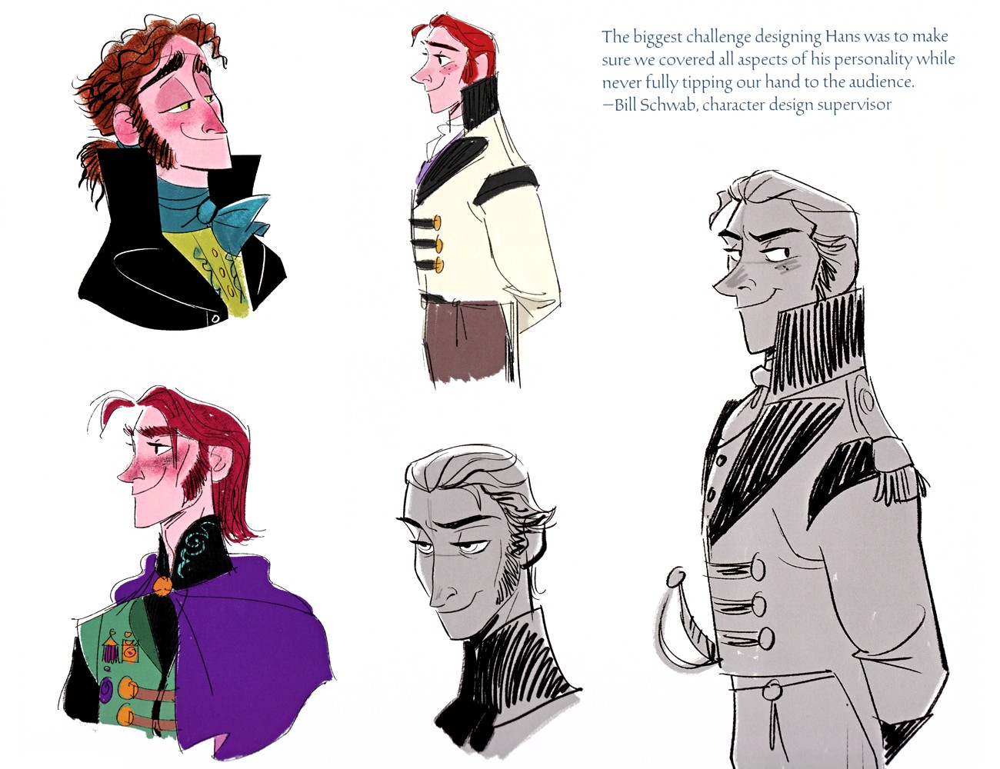

汉斯的服装设计是「完美王子」的视觉诠释——浅灰燕尾服 + 皇室蓝马甲 + 洋红领结 + 金绶带 + 佩剑，灵感来自传统短腰bunad（挪威传统服饰）。这套服装的「华丽」和「正式」，与他「伪装的王子」身份相匹配——但在「华丽」之下，隐藏着「权力的野心」。
汉斯穿着浅灰燕尾服 + 皇室蓝马甲 + 洋红领结 + 金绶带 + 佩剑——这套服装是「完美王子」的视觉诠释。浅灰燕尾服正式而优雅，皇室蓝马甲高贵而庄重，洋红领结增添了「浪漫」的气息，金绶带象征「皇室身份」，佩剑则是「王子的威严」。每一个细节都在「告诉」观众：这是一个「完美的王子」。但这种「完美」恰恰是「伪装」的一部分——汉斯用「完美的外表」来掩盖「冷酷的内心」。服装灵感来自传统短腰bunad（挪威传统服饰），与整个电影的挪威美术风格一脉相承。与克里斯托夫的「粗犷实用采冰人装」形成鲜明对比——一个是「华丽的伪装」，一个是「真实的劳动者」。
汉斯的佩剑是「王子身份」和「权力」的象征——但他从未真正用它战斗过。在冰宫，他试图用剑杀死艾莎，但被安娜阻止；在最终决战中，他的剑被安娜的冰墙挡住。他的「佩剑」更多是「装饰」而非「武器」——这象征着他的「权力」是「伪装的」，不是「真正的力量」。与艾莎的「魔法」和克里斯托夫的「采冰斧」形成对比：艾莎的魔法是「真正的力量」，克里斯托夫的采冰斧是「劳动的工具」，而汉斯的佩剑只是「身份的装饰」。这种「武器的对比」深刻地表达了《冰雪奇缘》的主题：真正的力量不是「身份的装饰」，而是「内心的力量」和「行动的力量」。
汉斯的服装配色以「冷色调」为主——浅灰、皇室蓝、洋红（偏冷的红）。这种「冷色调」与他「冷酷的内心」相匹配——即使在「伪装」时，他的「冷」也通过配色透露出来。与安娜的「暖色调」（绿色、紫色）和克里斯托夫的「品红/靛蓝」形成对比：安娜的「暖」象征「温暖和爱」，克里斯托夫的「品红/靛蓝」象征「真诚和实用」，而汉斯的「冷色调」象征「冷酷和算计」。这种「配色的对比」是《冰雪奇缘》视觉叙事的重要组成部分——通过配色，观众可以在「潜意识」中感受到角色的「性格」和「立场」。